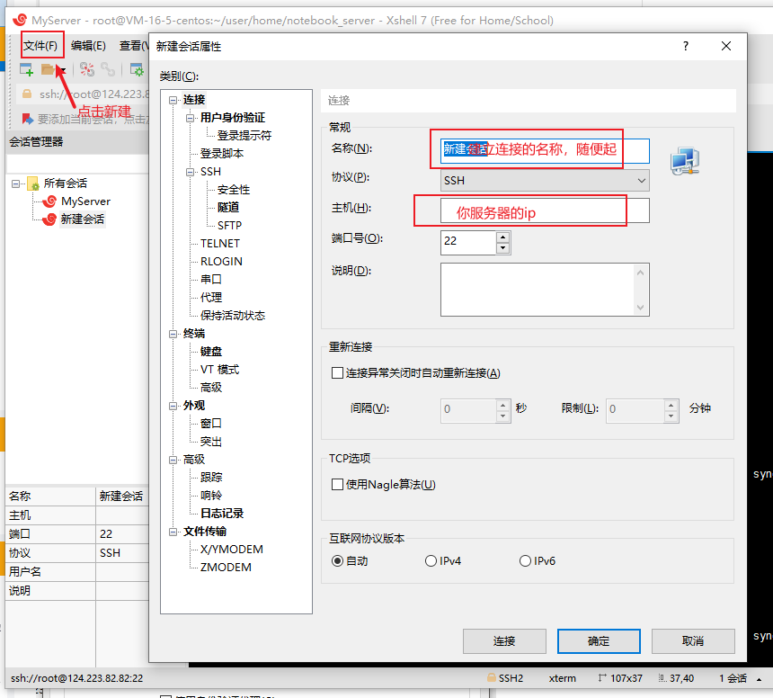

前后端项目部署 express+react
平常一直在做前端开发，就在单纯的开发项目代码，什么打包、部署的问题也没思考过什么，正好前不久心血来潮基于express+react做了一个小系统，用来练手，虽然功能不咋样，但是模块啥的总算是完成了，心想着自己前后台都整了，部署也得走一走吧，哈哈哈，就研究了一周末，赶紧把自己部署的过程总结一下。没部署过，不熟悉linux系统，做起来是挺费劲呀！
准备工具，我个人推荐使用Xshell ，Xftp基本上操作远程服务器就够了
首先，你需要整台服务器，我用的是腾讯的，别问为什么，问就是我试用的，不要钱，哈哈哈哈。。。我的是一个轻量级服务器，用的CentOS7.6镜像。
首先购买服务器后，自己要重置一下密码，在使用Xshell连接的时候就可以使用密码连接了，当然你也可以使用密钥连接，我觉得密码简单罢了，只不过每次链接都得输入。

当然Xftp也一样连接，咱们使用Xshell来操作linux命令，使用Xftp来给服务器上传压缩包文件之类的，真的超级方便。
接下来就是准备环境了，因为我这是node写的后台，也比较简单，所以也不用docker之类的了。
需要安装的就是 node，pm2，mongodb（因为我用的mongo数据库）,和 nginx
安装路径自己决定，别找不到了就行。我在usr/local目录下进行的
连接之后切换root用户，免得各种权限问题。
1 | sudo su root |
安装node
1，下载二进制文件(当然如果这个下载特别慢的情况下，可以本地下载压缩包，通过Xftp上传的服务器)
1 | wget http://nodejs.org/dist/v12.16.1/node-v12.16.1-linux-x64.tar.xz |
2,解压node压缩包
1 | tar xvf node-v12.16.1-linux-x64.tar.xz |
3,添加环境变量
1 | vim /etc/profile |
找到export PATH USER LOGNAME MAIL HOSTNAME HISTSIZE HISTCONTROL，在代码上面添加两行代码
1 | export NODE_HOME=/usr/local/nodejs |
4,修改完环境变量之后一定要记得执行下边的命令，不然不会生效
1 | source /etc/profile |
5,验证node是否安装成功，因为配置了环境变量，，所以在任何目录下都可以查看一下node版本，若是查看正常，证明安装成功了。
1 | node -v |
安装pm2（基于node的进程管理器）
1，因为安装了node，所以直接使用npm安装即可
1 | npm install pm2 -g |
安装mongodb
1,在自己建的目录下，下载mongodb二进制文件
1 | wget https://fastdl.mongodb.org/linux/mongodb-linux-x86_64-4.0.13.tgz |
2,解压
1 | tar -zxvf mongodb-linux-x86_64-4.0.13 |
3,配置mongodb的一些配置，主要是data数据文件和log日志文件，还有mongodb配置文件，依次执行以下命令
1 | cd /usr/local/mongodb/ 进入mongodb解压安装目录 |
mongodb.conf配置中代码如下
1 | dbpath=/usr/local/mongodb/data //填写自己新建的路径 |
4,修改环境变量
1 | vim /etc/profile |
在最后添加 export PATH=$PATH:/usr/local/mongodb/mongodb-linux-x86_64-4.0.13/bin （自己安装的mongo的bin目录路径）
5,使环境变量生效 (生效后就可以使用mongo命令操作mongo数据库了)
1 | source /etc/profile |
6，在安装目录的bin目录下启动mondo
1 | ./mongod --config /usr/local/mongodb/etc/mongodb.conf |
7,可以查看27017端口是否是mongodb在运行
1 | netstat -lanp | grep "27017" |
8,添加用户，安全认证，在你服务连接mongodb的时候需要，因为安全嘛
1 | mongo //操作mongo数据库 |
授权成功后，关闭mongo服务
1 | db.shutdownServer() |
9,重新进入配置文件，在最后一行加入 auth=true ,完成mongodb安装
1 | vim mongodb.conf |
现在使用mongo 使用数据库需要先输入一下代码，完成授权
1 | use admin |
安装nginx
1,下载nginx
1 | cd /usr/local |
2,解压nginx
1 | tar -zxvf nginx-1.18.0.tar.gz |
3,就是配置nginx，配置文件在 /conf/nginx.conf，可以在本地配置好后，直接通过Xftp上传到服务器，替换掉nginx的nginx.conf文件。
这个配置大家根据自己项目实际配置，网上一搜一大堆。
4，进入nginx的sbin目录启动nginx
1 | cd /home/usr/local/nginx/sbin |
5,修改完配置文件后，重启nginx
1 | ./nginx -s reload |
6,关闭nginx服务
1 | ./nginx -s quit |
现在可以说环境都安装好了，接下来就是部署我们的项目了。
部署前端项目：
前端项目不用启动，直接将静态文件，也就是打包的文件放在指定目录下，由nginx进行代理，所以启动nginx服务就可以了，启动nginx服务方式在安装nginx步骤里
方式一：
项目直接本地打包，将生成的dist文件丢到服务器上，用nginx指向你的dist目录，代理到指定端口
方式二：
在服务器安装git，使用git拉取你远程git仓库的前端代码，和在本地一样，在服务器上安装依赖，进行打包。
1 | npm install |
用ngin指向你生成的dist打包文件，都不用移动位置（dist文件放在哪，全看你自己决定）
部署后端项目：
直接也是拉取远程仓库后端代码，然后安装依赖，只不过使用pm2进行启动管理
1 | cd 你的后端代码目录 |
pm2常用命令
1 | pm2 ls 显示pm2管理的进程列表 |
切记，nginx监听的端口，后端服务使用的端口，一定要在服务器防火墙里添加规则，将端口开放，不然一切白费
自此部署应该可以正常访问了，脑瓜子有限，太菜了，这是没有砍菜刀，硬揽砍柴活啊，这只是项目可以在服务器跑起来，简单访问了，还有很多地方不足的，就算是开拓开拓技术嘛，哈哈哈。
还有就是安装环境的时候，可能会碰到好多问题，不用怕，直接baidu就完事了。项目接口地址一定要写对，还有就是需要配置跨域，nginx配置很重要，很重要！谢谢!!!